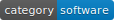
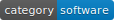

Shot VI – Data sheet¶
Version EN 4.3.3 released on Jul 22, 2022.
 


NeuroCar Shot VI (Vehicle Identification) is an application used to detect and identify vehicles visible in a single photo. Vehicle identification is based on the recognition of its registration number, country of origin, category, manufacturer and model version. The application works like an external module, with which communication takes place through a REST interface, and can be attached as a component of a host application.
Functions¶
Function |
Description |
Quality 1 |
|---|---|---|
Detection |
Detection of the vehicle in the image – the entire front (or rear) of the vehicle must be visible, with the entire license plate legible. It is also required that the tilt angle of the plate, i.e. the angle between the base of the plate and the horizontal edge of the image, be no greater than ±25°. Up to 32 vehicles in a single image are detected. |
≥ 95% |
Registration number |
Recognition of the license plate number for all detected vehicles – the number must be human readable, the height of each character in the plate must be in the range of 16÷96 pixels, the plate must come from one of the known countries 2. The recognition result is a string of letters and numbers (UTF-8 encoding), separators (except spaces) and other special characters are ignored. |
≥ 95% |
Country |
Recognition of the country of origin of a vehicle on the basis of the shape and content of the license plate – for all vehicles with a recognized license plate number. The country of origin is determined in the form of the corresponding two-letter code ISO 3166-1 alpha-2. The plate must come from one of the known countries 2. |
≥ 95% |
Category |
Assigning to each vehicle with a recognized license plate one of the following categories: |
≥ 95% |
Maker |
Vehicle maker recognition involves attaching a text label with the manufacturer’s name (e.g. “bmw”) to each vehicle with a recognized license plate. Brand recognition is possible for vehicles for which manual recognition is possible (for front view, in daytime conditions or at night, but with appropriate lighting). The assigned label is one of about 140 values from the included database. |
≥ 95% |
Model |
Recognition of a vehicle model involves attaching an additional text label with the model version designation to each vehicle with recognized brand. Model recognition is possible for vehicles for which recognition is possible manually (for the front view, in daytime conditions or at night, but with adequate lighting). For vehicles for which model recognition is not unambiguous, the label may contain the names of multiple model versions separated by |
≥ 70% |
Lane |
Assigning a vehicle to a lane is an optional functionality and occurs when the user adds information about the location of lanes in the analyzed image to the analysis – by indicating a dividing line. The user can indicate no more than 3 dividing lines (4 lanes). |
– |
Image |
The software interprets the input image given in JPEG or PNG format - 24 bits/pixel (RGB) or 8 bits/pixel (gray). The maximum dimensions of an image that can be sent for analysis is 2432×2048 pixels. |
– |
Speed cameras |
The software has a special mechanism that supports the recognition of photos from speed cameras that use a flash and a prism. In such photos, the license plate is overexposed (unreadable in its original location), and recognition of the plate’s contents is possible from a photo shifted by a set distance. |
– |
- 1
The value tested on a sufficiently large sample of randomly selected images, at a confidence level of 0.95, according to a dedicated quality assessment procedure. In the test, each vehicle is treated as a separate event in the random sample.
- 2(1,2)
At the same time, plates from the indicated countries in the region are recognized - by activating the appropriate regional package, for example, the
EUROpackage contains 48 countries from which vehicles travel in Europe. See also - variants.- 3
The list of labels available at any given time for a make and model is provided by the program developer. This list changes with subsequent updates.
- 4
A motorcycle can be detected in the image, however, it will not have a recognized license plate, country of origin, manufacturer and model version. For this reason, motorcycles are not taken into account when evaluating quality parameters.
Application¶
Installation¶
The shot-vi module is delivered in the form of a single installation file, which contains in its name information describing the variant in which it was prepared, i.e. version number, regional package designation and system platform – for example:
shot-vi-euro-4.3.3-linux-x86_64-Debian-buster.deb
is a file containing the installer of a variant for the recognition of European arrays, version 4.3.3, for a 64-bit Intel x86-compatible processor, running under the Linux operating system Debian build 10.12 (“buster”).
Attention
The corresponding installation file is provided by the developer after the details of the hardware and system platform are agreed with the customer.
Usage¶
The shot-vi module does not have any graphical user interface by default. The module’s functions are invoked by calling the corresponding RestAPI method with an argument in the form of a photo in JPEG or PNG format:
The user can add a dedicated set of parameters (e.g., specific to a given image) to the call. Such parameters are then placed as an argument in the URL to the HTTP post method.
A complete description of the data structures and RestAPI interface for the application can be found at the publicly available link:
https://gitlab.com/ncar-tools/04/shot-vi/-/blob/main/openapi.json
Processing¶
The shot-vi module can process simultaneously multiple input images given by separate API calls. Each image is processed in a separate thread. This makes parallel processing possible – processing multiple images simultaneously at the same time. The limitation in this case is the number of threads available on a given computer or license restrictions.
The average processing time of one photo significantly depends on its content. For simple cases (one vehicle with a clear plate) it is about 200 milliseconds. For images from speed cameras, where there are many vehicles and there is a need for recognition from reflections, the average time is 2 seconds but under special conditions this time can be extended even to 10 seconds (more vehicles in the image, larger). Time measurements were made for a processor of the Intel(R) Xeon(R) CPU E5-2660 class clocked at a base frequency of 2.2 GHz. For variants running on ARM processors, processing times are longer.
Result¶
The following figure contains an ideational diagram describing the result, which represents in JSON format the contents of the input image:
The shot-vi module generates for each detected vehicle a separate description containing:
Information about the position (x,y),(s,w) of the front of the vehicle in the image – the image of the front of the vehicle allows, for example, to identify the class, manufacturer and model version,
information about the position (x,y),(s,w) of the license plate – and the plate is then used to recognize its contents,
Information about the position of (x,y),(s,w) for each character,
All recognized variants of the license plate, along with the indicated level of correctness of the variant,
the result of recognizing each character along with the level of correctness of this recognition,
the result of recognizing other features of the license plate, along with the level of correctness of recognition, including:
country of origin code,
vehicle category,
brand,
model,
lane.
If the given result contains variants, they are ordered by level of correctness, from largest to smallest.
Variants¶
Variants of the shot-vi module include:
processor,
The maximum number of threads – simultaneously processed images,
system platform,
country of origin of the vehicle.
By system and processor, the breakdown is as follows:
Var. |
Processor |
Threads |
Instr. set |
System |
Prefix |
|---|---|---|---|---|---|
A0 |
x86 64-bit |
∞ |
SSE 4.2 |
Linux |
|
A4 |
x86 64-bit |
≤4 |
SSE 4.2 |
Linux |
|
B0 |
x86 64-bit |
∞ |
SSE 4.2 |
Windows 64-bit |
|
B4 |
x86 64-bit |
≤4 |
SSE 4.2 |
Windows 64-bit |
|
C4 |
ARM 64-bit |
≤4 |
neon |
Linux |
|
Attention
The module uses special commands of the type SIMD specific to the type of processors. Using a processor that does not have the above-mentioned types of commands implemented will result in the module not working.
Variants specifying acceptable countries of origin are denoted by an additional suffix. The country of origin of the vehicle is determined based on geometric features and the contents of the license plate. The system is adapted for simultaneous recognition of numbers from multiple countries, but the user must select one of the following regions – recognition is limited to countries from this region only:
Suffix |
Meaning |
|---|---|
|
Africa (some countries) |
|
Central America (some countries – |
|
North America (USA and Canada – in preparation) |
|
South America (some countries) |
|
Asia (some countries – in preparation) |
|
Europe |
|
Middle East (some countries) |
License¶
The shot-vi module is licensed per instance, i.e. a separate license is required for each running process. The exception may be that additional provisions in the license agreement state otherwise.
Each copy of the module (license) is associated with a unique serial number and a corresponding digital certificate generated for it in accordance with the X.509 standard. The serial number is added to the results of the module and has, for example, the form:
ncar-v-shotvi-04a00001
References¶
…
Changelog¶
4.3.3 2022-06-07
Document initiation
See also¶
For more information about NeuroCar products, visit https://www.neurocar.pl.
This document is available online at https://docs.neurocar.pl/ncar-v-shotvi-4-info/.